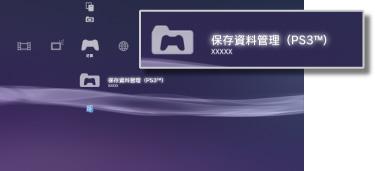

遊戲 > 遊玩PlayStation®3規格軟件 > 關於保存資料
關於保存資料
PlayStation®3規格軟件的保存資料均被保存於主機儲存空間中。選擇 （保存資料管理（PS3™））即會顯示。
（保存資料管理（PS3™））即會顯示。

提示
- 使用者可個別管理自己的保存資料。在
 （使用者）登錄了複數使用者時，選擇（保存資料管理（PS3™））後顯示的內容會隨登入之使用者而改變。
（使用者）登錄了複數使用者時，選擇（保存資料管理（PS3™））後顯示的內容會隨登入之使用者而改變。 - 選擇保存資料的圖示後按下
 按鈕，可開啟選項選單，且能依更新日改變排列或依標題排列替資料夾分類。
按鈕，可開啟選項選單，且能依更新日改變排列或依標題排列替資料夾分類。
將保存資料儲存於PSNSM 的伺服器
您可將PlayStation®3規格軟件的保存資料儲存於PSNSM 的伺服器，或下載至其他PS3™繼續遊玩。若要使用此機能，需先建立Sony Entertainment Network帳戶並加入PlayStation®Plus。
自動保存至線上儲存空間
可將更新的保存資料定期自動保存至線上儲存空間。
需個別對每個遊戲進行此項機能的設定。
1. |
從 |
|---|---|
2. |
選擇［自動上傳保存資料］並設定為［開］。 |
 （遊戲）選擇要上傳保存資料的遊戲後，按下
（遊戲）選擇要上傳保存資料的遊戲後，按下提示
- 上傳對象為啟用設定後已更新的保存資料。
- 將
 （設定）＞
（設定）＞ （主機設定）＞［自動更新］設定為［關］，即可停用保存資料的自動上傳。
（主機設定）＞［自動更新］設定為［關］，即可停用保存資料的自動上傳。
手動保存至線上儲存空間
1. |
進入 |
|---|---|
2. |
選擇［複製］。 |
3. |
選擇［線上儲存空間］為保存位置。 |
將線上儲存空間的保存資料下載至PS3™
1. |
選擇 |
|---|---|
2. |
選擇希望下載的保存資料，並按下 |
3. |
選擇［複製］。 |
提示
- 可使用的線上儲存空間上限為1GB，可儲存的保存資料總計為1000個。
- 無法保存PlayStation®3規格軟件、PC Engine及NEOGEO以外的保存資料。
- 禁止複製的保存資料將以下列方式支援。
- - 上傳至線上儲存空間：隨時可以。
- - 從線上儲存空間下載至PS3™：儲存於線上儲存空間的保存資料，需於上傳或下載24小時之後才能再次下載。
- 某些遊戲可能無法使用線上儲存空間。關於不支援的遊戲或服務，詳情請參閱這裡。